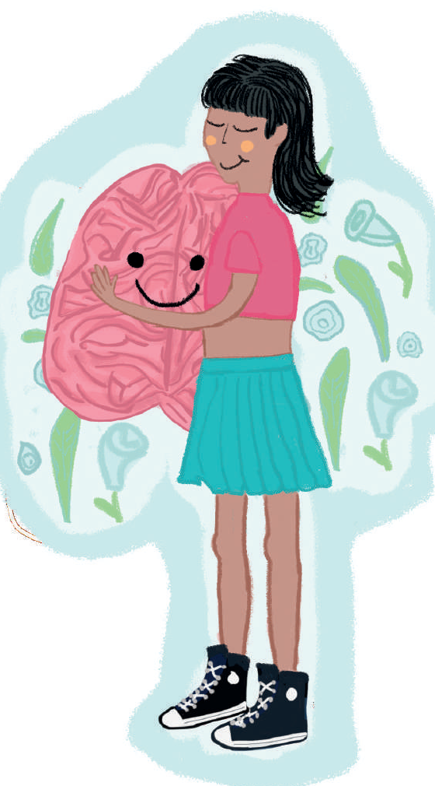

Si identifica agotamiento cognitivo o está sobrellevando una crisis, es importante cuidarse teniendo en cuenta lo siguiente (Alarcón, 2020):
- No exigir demasiado a nivel intelectual:
- cuando el cerebro está "secuestrado" a nivel emocional nuestras capacidades se reducen.
- Es importante respetar el ritmo en que la mente procesa estas situaciones.
- Redactar objetivos a corto plazo:
- frente a la situación de incertidumbre, se debe vivir el día a día, con objetivos sencillos que ayuden a tener una estructura y coherencia.
- Es beneficioso mantener una rutina diaria, con horarios en el hogar, trabajo, familia, ejercicio físico, tiempos de TV, descanso, etc.
- No tomar decisiones importantes:
- Si se siente abrumado, con incertidumbre o ha pasado una situación que provocó emociones incómodas, es recomendable no tomar decisiones apresuradas sobre asuntos importantes.
